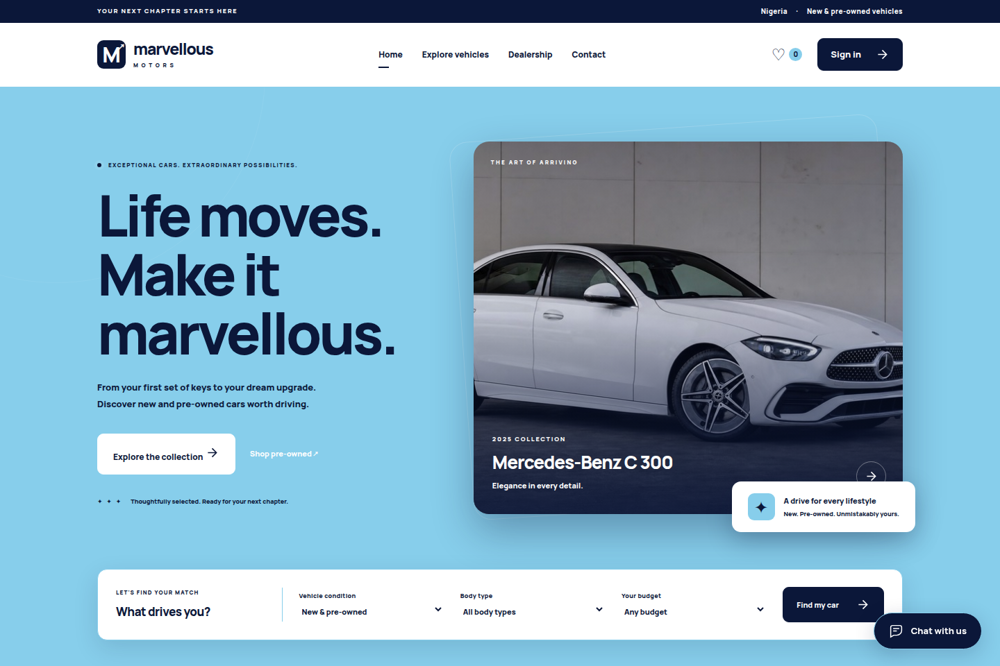

WEB APPLICATION01

Marvellous Motors
A vehicle showroom with a searchable collection, customer accounts, payment review and admin-managed delivery updates.
Full-stack development
Hello, I’m Marvellous.
I’m Otiti Mordecai Marvellous. I build web applications and practical tools with Go and Python, turning everyday ideas into things people can use.
A selection of web experiences and practical tools.
Different problems. The same curiosity.

A vehicle showroom with a searchable collection, customer accounts, payment review and admin-managed delivery updates.
❯ python3 run.py
A little structure. A better campus.
❯ What can we help with today?
A collaborative campus helpdesk for creating tickets, prioritizing requests, assigning staff and tracking work through resolution.
A Flask number-guessing game with difficulty levels, attempt limits, session-based game state and feedback after each guess.
// a small tool for words
input.txt → output.txtA command-line exercise that reads a text file, applies a text transformation and writes the result to an output file.
I like the moment an idea starts to work.
My work brings together Go, Python and the web. I’ve explored vehicle sales workflows, campus support systems, interactive games and command-line utilities—each one a different way to learn, solve a problem and make something useful.
I’m drawn to clear interfaces and organized logic. I keep building, asking questions and improving the details, from the first input to what happens next.
The technologies behind my selected projects.
Web servers, application logic,
file handling and CLI tools.
Command-line applications,
Flask, workflows and testing.
HTML, CSS and JavaScript.
Clear layouts across screen sizes.
Git, GitHub, SQLite and JSON.
Keeping work structured.
A project, a question, or just an introduction.
I’d love to hear from you.